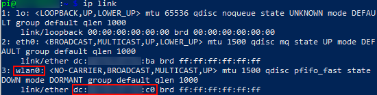
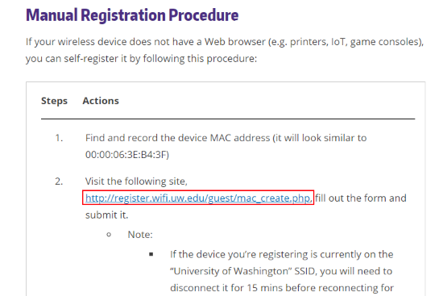
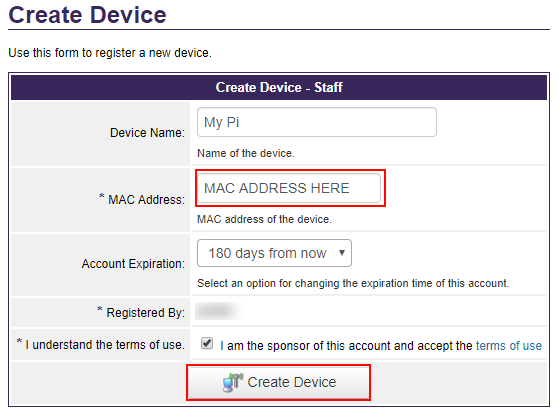
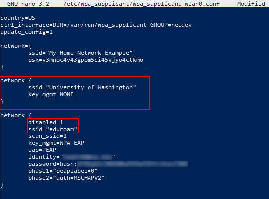

WPA Supplicant Configuration Reference (2020-01-18)¶
Basic Configuration¶
Wireless settings for the Pi are controlled by a service called wpa_supplicant, which stores information about known wireless networks in a text-based configuration file in /etc/wpa_supplicant/. By default, in Raspbian, the name of this file is wpa_supplicant.conf. You may also encounter an interface-specific configuration where the interface name is appended to the file, e.g., wpa_supplicant-wlan0.conf. In both cases, the file is owned by root and requires root privileges to read or edit.
Security Risk
wpa_supplicant.conf is protected from casual reading due to the fact that it is a sensitive file that will likely contain your home network keys and a hash of your UW NetID password. While hashes typically provide some extra protection of a stored password, MD4 is nearly useless in this regard except with really strong passwords.
Practice caution with this file:
- Never share the contents of this file directly online.
- Scrub passwords, keys, and hashes before committing a copy into a repository.
- Reset your password if you lose your Pi or suspect that you may have disclosed it inadvertently.
You can edit wpa_supplicant configs directly on the Pi using any terminal-based text editor. Alternatively, you can create the file on your local system and copy it into place on the Pi (as described later in this guide).
Warning: Windows line-endings and rich text format
As students get started with Linux networking, we frequently encounter problems related to the overall file format. As a rule, the configuration files you create in this class must be plain text with standard line endings.
You'll want to stick to using a code-oriented text editor, as opposed to options like macOS TextEdit and Windows Notepad that often save files as rich text rather than plain text.
For Windows users, a code-oriented editor will also help you avoid issues related to line endings. While most operating systems use a simple New Line (aka Line Feed) control character to signify the end of a line, most Windows tools also include a Carriage Return. This alternate line ending causes parsing errors in many Linux tools.
The general structure of the configuration file is show below. The file begins with a standard set of parameters specifying the country (needed to initialize appropriate radio settings), a control interface used by network management tools, and a boolean that instructs wpa_supplicant to accept configuration updates from other network management tools. We won't delve any deeper into the meaning of these initial parameters within this course. Rather, our concern will be how to configure Linux to join nearby wireless networks.
Example wpa_supplicant.conf
country=US
ctrl_interface=DIR=/var/run/wpa_supplicant GROUP=netdev
update_config=1
network={
ssid="Some public network"
key_mgmt=NONE
}
network={
ssid="My home network"
psk="Don't tell anyone the password"
}
The contents of the network block will depend largely on the security settings of the network, e.g., whether or not the network is encrypted with a passphrase. This document provides instructions for configuring three common types of networks:
- Unencrypted Networks
- WPA2 Personal Networks (simple passphrase)
- WPA2 Enterprise Networks
Let's start by examining the configuration for an unencrypted network.
Unencrypted Networks¶
All networks are defined by parameter=value pairs enclosed within network={}. Regardless of security configuration, each network block is required to contain an ssid parameter identifying the network. The service set identifier (SSID) is the network name that you see on your device when you connect to a wireless network. Since this name may include whitespace, we encapsulate it in double quotes.
In addition to the ssid, wpa_supplicant expects us to provide encryption a passphrase and other encryption settings for the wireless network. Omitting these settings, even for an unencrypted network, will result in errors.
Instead, for unencrypted networks, we explicitly disable encryption with key_mgmt=NONE.
Configuration for an unencrypted network
network={
ssid="Coffee Shop"
key_mgmt=NONE
}
WPA2 Personal Networks¶
For a basic (non-enterprise) encrypted network, the configuration of the network block changes only slightly. Rather than specify the key_mgmt setting, we assign the network passphrase to the psk parameter.
There are two ways to accomplish this task. First, we can assign the passphrase directly to the parameter in plaintext as shown here:
Danger: Don't do this!!!
network={
ssid="Home Wifi"
psk="super secret squirrels"
}
Security professionals generally frown on plaintext passwords and passphrases being written to configuration files or code. As such, we prefer to write the configuration based on the raw network key (computed using a function called PBKDF in conjunction with SHA1).
Using wpa_passphrase to generate a raw PSK
You can generate the raw psk directly on your Pi by running the wpa_passphrase utility. This utility takes your SSID as an argument and then prompts you to enter your passphrase.
# Pass your SSID as the first argument wpa_passphrase "Home Wifi"
You will not see any characters or placeholders echoed as you type the passphrase, but wpa_passphrase will continue to accept input until you hit Enter/Return. The output will be a valid wpa_supplicant configuration that you can paste into your configuration.
network={
ssid="Home Wifi"
psk=2508539ff867a3578f6ba7d9ee1d4a62aea82c25d30ffb1eb3a05cd08a373c02
}
WPA2 Enterprise Networks¶
Unlike home and coffee shop networks, enterprise networks like Eduroam, require a bit more setup since they authenticate individual users to the network as part of the process of establishing an encrypted connection. As such, these networks are substantially more secure than networks that are protected by WPA2 Personal.
Eduroam at UW uses the NetID system to authenticate users and grant secure access to the network. Before you can join the network, you will first need to compute a hash from your NetID password. For security and privacy purposes, you will use this hash as a substitute for your password within the final configuration.
Computing an MD4 hash in Linux
Follow these commands in order to compute the MD4 hash in Linux.1 The history commands are not needed to compute a hash but are added for security. Without them, your password will be stored in the Bash history file and easily readable to anyone with access to your memory card.
set +o history echo -n 'This is your password' | iconv -t utf16le | openssl md4 # You should see output like 6f9bad2c90b80bd549e595fc91e27806 set -o history
The following template supplies all of the parameters needed to attach to Eduroam at UW. Add it to your wpa_supplicant.conf, substituting your own NetID and password hash for the supplied values.
Eduroam configuration template
network={
ssid="eduroam"
scan_ssid=1
key_mgmt=WPA-EAP
eap=PEAP
identity="YOUR_NETID@uw.edu"
password=hash:6f9bad2c90b80bd549e595fc91e27806
phase1="peaplabel=0"
phase2="auth=MSCHAPV2"
}
Using "University of Washington" instead of "eduroam"¶
As of 1/27/20, there is an issue we are facing with the "eduroam" network.
Temporarily, we recommend using the "University of Washington" WiFi instead.
Please setup your Pi for connecting to eduroam, but follow this guide if that does not work.
To set "University of Washington" up, do as follows:
Find the MAC address of wlan0 on your pi using the ip link command.
Make sure to select the MAC of wlan0 and not eth0!

Register your wlan0 MAC address manually for UW WiFi at:
https://itconnect.uw.edu/connect/uw-networks/campus-wi-fi/manual-wifi-reg/


Next, edit wpa_supplicant.conf again using:
sudo nano /etc/wpa_supplicant/wpa_supplicant.conf
or sudo nano /etc/wpa_supplicant/wpa_supplicant-wlan0.conf
depending on where you are in the setup of your Pi.
Add the “University of Washington” network.
Put this definition above eduroam in your wpa_supplicant.conf file so that it will take priority.
Also, add disabled=1 on a line in the eduroam section.

Applying Configuration Changes¶
Like other services, wpa_supplicant will not load our changes automatically. Rather than reset the daemon completely using systemctl, we can use wpa_cli to update the configuration and perform other basic maintenance.
When running wpa_cli we need to specify the interface we are configuring and a command to send to the wpa_supplicant service.
Load configuration from wpa_supplicant.conf
# Update configuration from disk wpa_cli -i wlan0 reconfigure # Check the status of current connection wpa_cli -i wlan0 status
See man wpa_cli for further instructions and examples.
-
The project repository includes a shell script called calc-md4-hash.sh that will compute this value for you. It can be run from macOS, Linux, and Git Bash (Windows users). To run the script, navigate to the resources path in your git repository and type
./calc-md4-hash.sh. You may also copy this file to your Pi and run it there. ↩